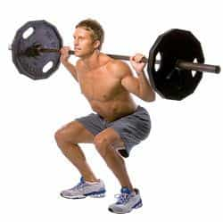
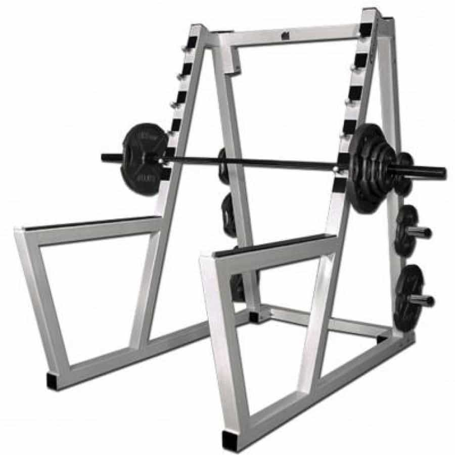
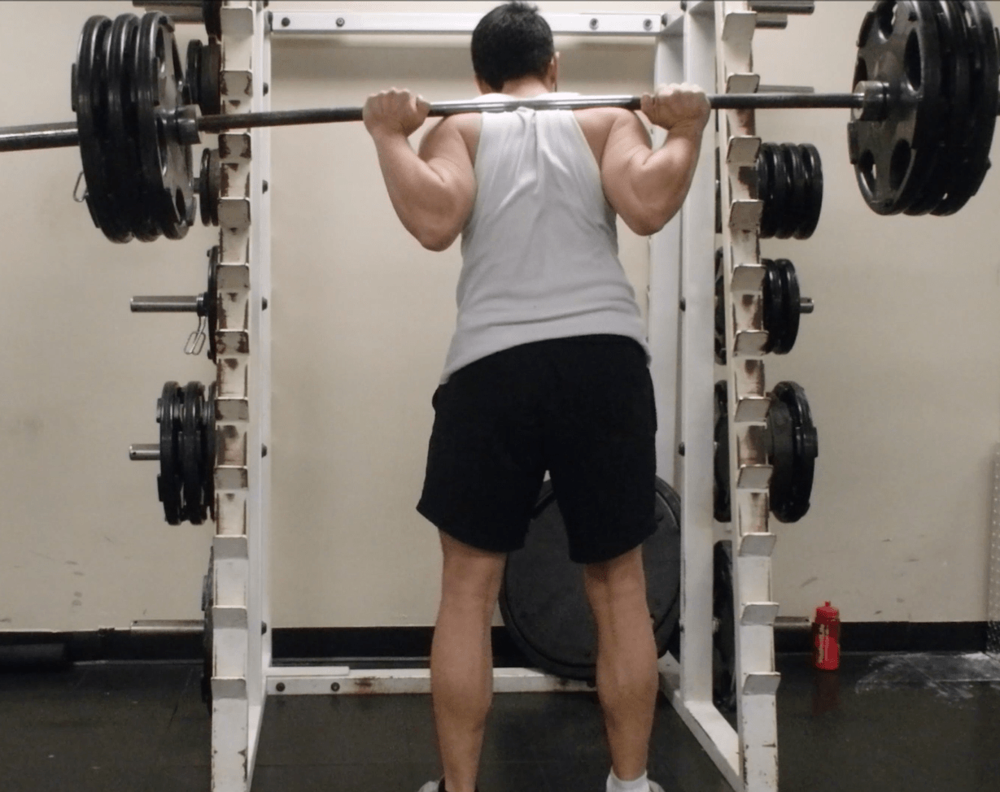
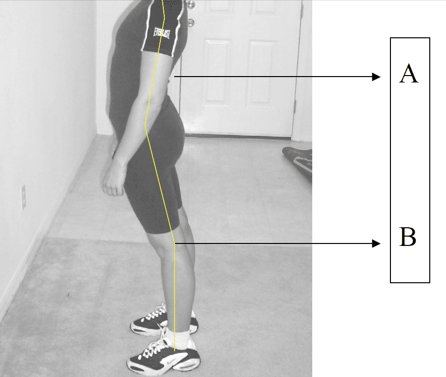
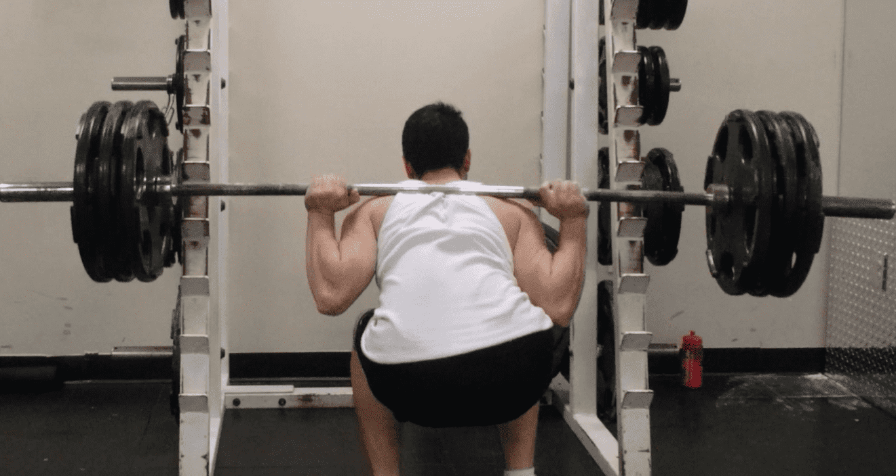

Having previously discussed two other lifts in the “big four” series, we will now discuss the squat, arguably the best exercise for the legs, and unarguably a fundamental motion for any athlete or physical culturist. This is because doing the squat properly will not only train the big muscles of the quadriceps, but also the calves, the feet, the buttocks, and the hips.
Combine the squat with the deadlift (which hits the hamstrings much better than the squat), and you’ll never need any other lower body exercises. And it goes without saying that in training your legs, you’ll make yourself run faster, jump higher, punch and kick harder, grapple stronger, and do anything you want to do better.

Squat Variations
Like most exercises worth doing, there are a julienne of variations of the squat. There’s high bar squats, low bar squats, back squats, front squats, overhead squats, pistol squats, and so forth. However, for the majority of lifters, the basic high bar back squat is sufficient for their needs.
To do this exercise, you will need a rack or power cage, preferably the latter as it has safety bars to put the weight down should you be incapable of lifting the weight. To begin, remove the archetypal dudebro doing curls in the squat rack—you’re a man and you’ve got real exercises to do!
Once that’s been done, place the bar in the rack at about shoulder/neck level. Load it with whatever amount of weight you wish.

Then, duck under the bar and then stand up straight, with the bar rest on your trapezius muscles and shoulders—NOT your neck—and gripping the bar with an overhand grip. I understand this might seem a bit confusing, so here is a picture.

The camera was a bit skewed, hence why the picture looks a bit lopsided. My apologies.
Some lifters with a little bit of experience might be asking why I am not using the pad, or that weird ox-yolk thing, or any other sort of device to cushion the weight of the bar against my shoulders. The reason is that I’m not a little girl, and I don’t need to protect my delicate shoulders with a “pussy pad”. Grab the bar, flex your upper back, and suck it up. If your form is right, you don’t need the pad.
Having grasped the bar properly, you must get ready to lift. Get yourself comfortable and place your feet shoulder width apart. Look straight ahead and lock/hollow the back. If that sounds familiar, it should—it’s the exact same preparatory steps you took do for the deadlift. This speaks to the shared muscles these exercises target, and the shared risk for injury should form be improperly done.

This is a textbook image of the medical condition known as hyperlordosis, but as a visual aide I feel it helps people keep their backs in the right position
However, while back injury is a possibility with the squat, the knees and ankles are much more at risk, and will be discussed shortly.
Anyway, keep your feet pointing straight ahead or slightly pointed out. This keeps the knees from pronating inward, which is not something you want to be doing—it weakens the squat and leads to risk of injury.
Begin squatting down in a controlled fashion, while keeping your torso tight and your feet angled properly. Squat down at least until your hips are parallel to your knees, and preferably until your hamstrings touch your calves—or “ass to grass” as the laymen say.
It is through this squatting that the two main risks for injury occur. Should the trainee not squat low enough, he will be bearing weight on his knees rather than the muscles of his legs and glutes, and this can lead to nagging injury outside the gym.

A patella fracture
And in the “ass to grass” squat, a trainee that doesn’t keep his back and hips tight can risk having lower back movement colloquially known as “buttwink” (in actuality a forward tilting of the pelvis at the bottom of the squat), and this can also lead to lower back and hip injury. Luckily, should you already be performing my posture exercises—and really, there’s no reason you shouldn’t be—you should have the hip flexibility to avoid this.

Once you have gone sufficiently low, the actual lift begins. Push hard through the ground (again I recommend doing this barefoot if you can) and straighten out the legs, while keeping your body straight as it should be. Once you’re finished, walk forward and ease the bar onto the rack.
Read More: The Thrust Is A Must (The Importance Of Core Strength)